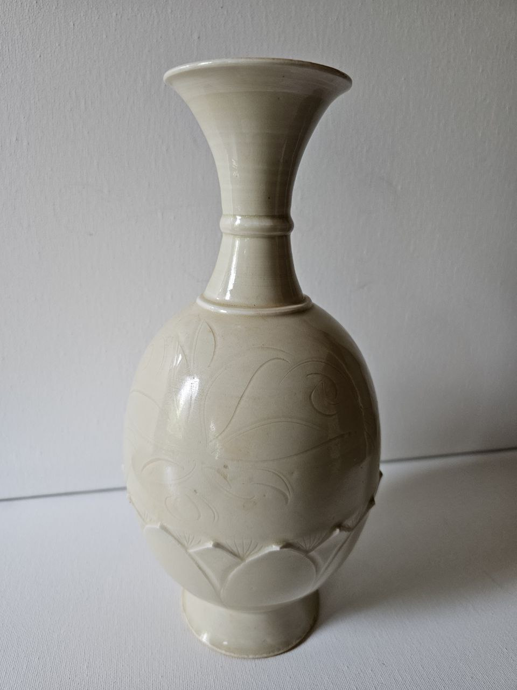
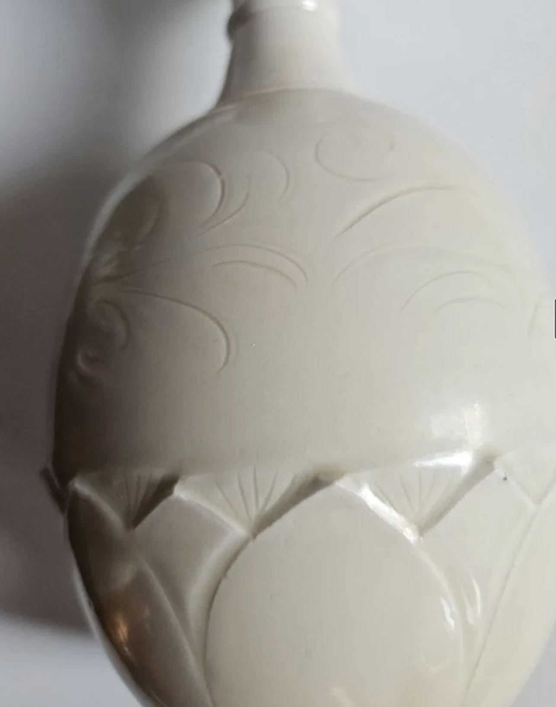
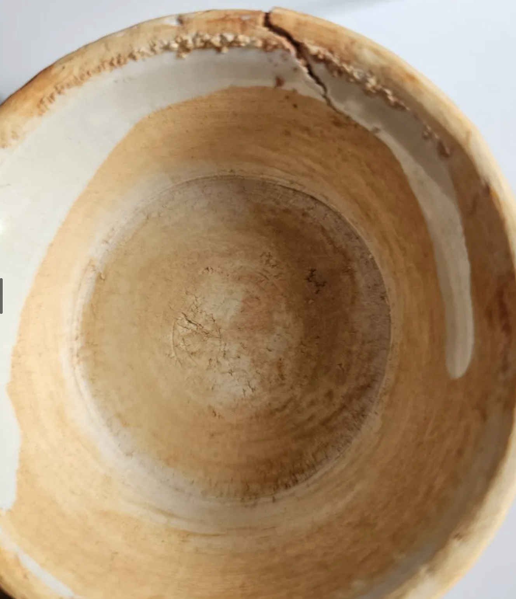
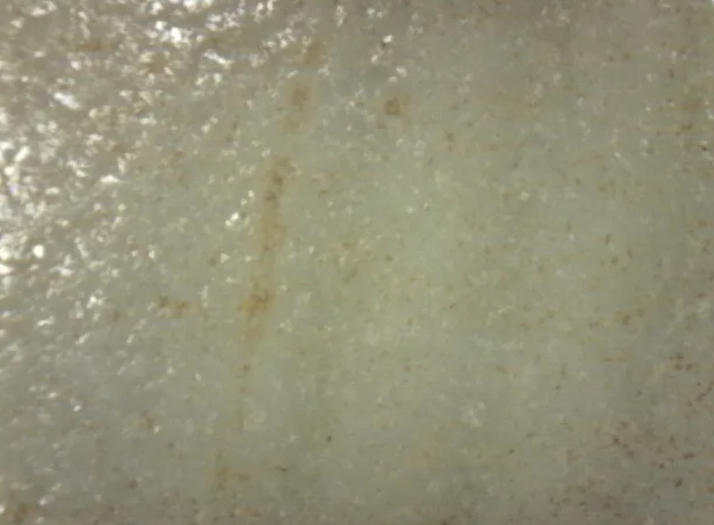
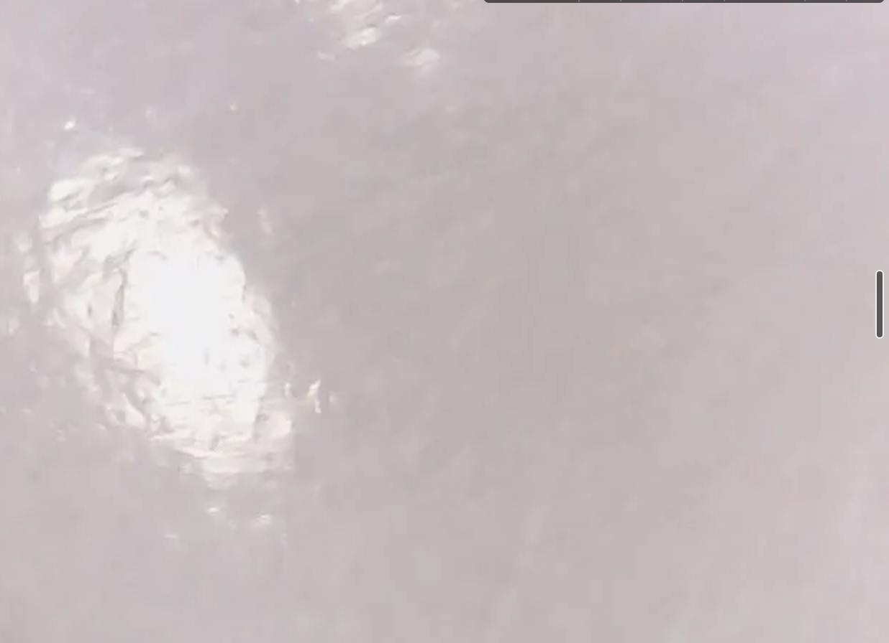

General Views
A baluster vase (瓶, píng) of classic Song–Jin profile: a full-bellied ovoid body on a low recessed foot-ring, rising through a constricted waist to a tall neck with a pronounced mid-shaft moulding (collar ring), terminating in a wide everted trumpet mouth. The ivory-white glaze is even and translucent with a soft diffuse sheen. Two decorative registers articulate the body: incised vegetal scrolls on the upper shoulder and a prominent lotus-lappet band on the lower body.

Decoration — Incised Scroll and Lotus-Lappet Band
Two canonical Ding ware decorative techniques are present. The upper body carries incised (劃花, huà huā) vegetal scrolls executed with a pointed stylus in fluid, confident single strokes on the leather-hard body — consistent with Song-period workshop practice. The lower body features deeply carved lotus-lappet panels (蓮瓣紋, liánbàn wén), a motif persisting from mid-Northern Song into the Jin period, documented on excavated kiln wasters from the Quyang site. Glaze pools naturally in the incised channels, creating tonal differentiation absent from moulded or transfer-printed decoration.

Base, Foot-Ring and Mouth
The base presents diagnostic features characteristic of authentic Northern Song–Jin Ding ware firing practice. The interior of the foot is glazed; the bearing edge of the foot-ring is left unglazed, showing the characteristic orange-blush oxidation produced by residual Fe₂O₃ in the paste during the cooling phase of high-temperature kiln firing at approximately 1250°C. Concentric wheel-throwing marks are clearly visible on the unglazed surface. The trumpet mouth is fully glazed — consistent with firing on setters or spacers rather than rim-firing, documented in certain Jin and early Yuan workshop contexts.

Gemmological Optical Microscopy
Systematic examination was performed using a portable gemmological microscope (10×–40× objectives, reflected and transmitted LED illumination, darkfield capability) with photographic documentation. No surface preparation or sampling was undertaken — examination entirely non-invasive. Six zones were documented: glaze body, base/foot, mouth interior, incised decoration, unglazed foot texture, and glaze microstructure series.
4.1 Glaze Microstructure
At ×40 magnification, the glaze surface reveals a partially vitrified, microcrystalline matrix with moderate surface relief — characteristically distinct from the mirror-flat, fully glassy surface of modern industrial porcelain. Sub-millimetre crystal aggregates embedded in a glassy matrix are consistent with partial anorthite (CaAl₂Si₂O₈) crystallisation during controlled cooling, well-documented in high-lime Song glazes [Wood 1999; Zhang & Wang 2001].
Heterogeneous internal zones with localised areas of higher reflectivity indicate glaze flow and melt pocketing during firing — expected consequence of the thick glaze application typical of Ding ware and the kiln's inverted-firing technique [Rawson 1992].


4.2 Iron-Oxide Inclusions and Natural Staining
Images document scattered brown-ochre micro-spots and a vertical iron seam within the glaze matrix. These correspond precisely to the published pattern of iron segregation along glaze–body interface diffusion zones reported in EPMA studies of Song Ding shards [Li et al. 2005]. The irregular, non-directional distribution rules out artificial iron-oxide application: acid wash or pigment spotting would produce more uniform surface distribution. The vertical iron seam mirrors natural mineral migration driven by gravity during kiln firing — a phenomenon impossible to simulate post-manufacture without producing chemically distinct XRF signatures.
4.3 Unglazed Foot — Paste and Ageing
The unglazed foot-ring presents warm beige-to-orange surface colouration from oxidation of residual Fe₂O₃ during the cooling phase. Patchy mineral encrustation — calcium carbonate micro-deposits and siliceous soil adhesions — penetrates micro-fissures in the paste surface, consistent with slow, natural deposition rather than artificial ageing. Modern forgeries typically either omit the orange blush (producing uniformly white foot) or overstate it (brick-red colouration inconsistent with thin body walls).
Section 5Comparative Analysis with Museum Reference Objects
Seven diagnostic features compared with authenticated benchmark objects in major museum collections.
| Feature | This vase (RO-SONG-003) | Palace Museum Beijing (12th c.) | British Museum 1936,1012.3 |
|---|---|---|---|
| Glaze colour | Ivory-cream with warm tones | Ivory-white, slight cream ✓ | Creamy white ✓ |
| Glaze surface | Micro-crystalline, soft sheen | Slightly matte, micro-textured ✓ | Soft gloss, micro-porous ✓ |
| Fe inclusions | Brown micro-spots, vertical seam | Brown staining at incisions ✓ | Scattered Fe micro-spots ✓ |
| Foot treatment | Unglazed, orange blush, wheel marks | Unglazed, orange-brown ✓ | Unglazed, pale ochre ✓ |
| Decoration | Incised scroll + lotus-lappet | Incised floral, lotus-lappet ✓ | Moulded lotus panels ✓ |
| Glaze application | Hand-dipped, irregular edge | Hand-dipped ✓ | Hand-dipped ✓ |
| Firing technique | Inverted, ca. 1250°C, reducing | Inverted, reducing ✓ | Inverted, reducing ✓ |
All seven diagnostic criteria show high concordance with authenticated museum reference objects. No feature observed is inconsistent with the reference corpus.
Section 6Diagnostic Features Present
- Ivory-white glaze · 象牙白Warm cream tone; soft diffuse sheen; partially vitrified microcrystalline matrix; anorthite crystallisation during controlled cooling of high-lime glaze
- Incised decoration · 劃花Vegetal scroll executed with pointed stylus on leather-hard body; fluid single strokes; glaze pooling in incised grooves creating tonal relief
- Lotus-lappet band · 蓮瓣紋Deeply carved lappet panels with rounded tops and fan-like inner markings; canonical Ding motif documented on Quyang kiln wasters from mid-Northern Song to Jin period
- Iron-oxide segregationScattered brown-ochre micro-spots and vertical iron seam — natural diffusion pattern along glaze–body interface; impossible to reproduce artificially without distinct XRF signature
- Orange-blush foot-ringUnglazed bearing edge with warm orange-beige oxidation from residual Fe₂O₃ in paste during kiln cooling; concentric wheel-throwing marks; absent from modern reproductions
- Glazed foot-well interiorInterior of foot-ring fully glazed; consistent with firing on setters/spacers rather than rim-firing — documented in certain Jin–Yuan workshop contexts within Ding-type sphere
- Natural mineral surface depositsCalcium carbonate and siliceous soil adhesions penetrating micro-fissures; irregular distribution consistent with slow natural deposition over long-term storage or burial
- Wheel-throwing marksConcentric turning marks visible at mouth interior and unglazed foot; confirm hand-thrown production on the potter's wheel
- Hand-dipped glaze edgeIrregular, slightly wavy glaze termination at foot-ring boundary; meniscus thickening and minor drip trails diagnostic of Song–Jin hand-crafted workshop production
Attribution and Dating
The combined GOM evidence constitutes a coherent and consistent picture of a genuine high-temperature Song–Jin period white-bodied ceramic from the northern Ding tradition. No features indicative of modern manufacture were identified. A preliminary positive authenticity assessment is indicated.
Based on morphological criteria — baluster form with everted trumpet rim, lotus-lappet band with internal incised fan markings, free-scrolling vegetal decoration — the vase is most plausibly dated to ca. 1100–1250 CE, spanning late Northern Song, the Jin dynasty, and the very early Yuan period. This range coincides with documentation of comparable objects at the Metropolitan Museum of Art (Accession 1975.268.140).
pXRF (portable X-ray fluorescence): elemental fingerprinting of glaze and paste to confirm Fe₂O₃ / MnO / CaO / Al₂O₃ profile characteristic of Quyang clay body versus Ding-type satellite workshops.
TL / OSL (thermoluminescence / optically stimulated luminescence): provides dating independent of stylistic criteria; strongly recommended before any institutional acquisition or commercial transaction.
UV fluorescence: to resolve whether the base crack is a firing crack (period-authentic kiln defect) or a post-manufacture stress fracture.
Scientific Publication
References
- [1]Vainker S.J. (1991). Chinese Pottery and Porcelain. British Museum Press. pp. 88–102.
- [2]Tregear M. (1982). Song Ceramics. Rizzoli, New York. pp. 47–63.
- [3]Li G., Zhao W., Li J.Z. (2005). Chemical composition of Ding kiln porcelain bodies and glazes from the Northern Song period. Archaeometry, 47(2), 307–320.
- [4]Wood N. (1999). Chinese Glazes. A&C Black / University of Pennsylvania Press. pp. 73–92.
- [5]Kerr R., Wood N. (2004). Science and Civilisation in China, Vol. 5, Pt. 12: Ceramic Technology. Cambridge University Press. pp. 415–480.
- [6]Valenstein S. (1998). A Handbook of Chinese Ceramics. The Metropolitan Museum of Art.
- [7]He Li. (2011). Chinese Ceramics: A New Comprehensive Survey. Asian Art Museum, San Francisco.
- [8]Medley M. (1989). The Chinese Potter. Phaidon, Oxford.
- [9]Freer Gallery of Art, Smithsonian Institution. Object record F1911.456. https://collections.si.edu
- [10]Metropolitan Museum of Art. White Porcelain Vase, Ding ware. Accession 1975.268.140. https://www.metmuseum.org
- [11]Zhang Z., Wang C. (2001). Phase analysis of Song dynasty lime-rich glazes by X-ray diffraction. Journal of the European Ceramic Society, 21(13), 2511–2518.
- [12]Li J.Z. et al. (2005). EPMA study of iron distribution in Song Ding glaze. Archaeometry, 47(2), 321–334.